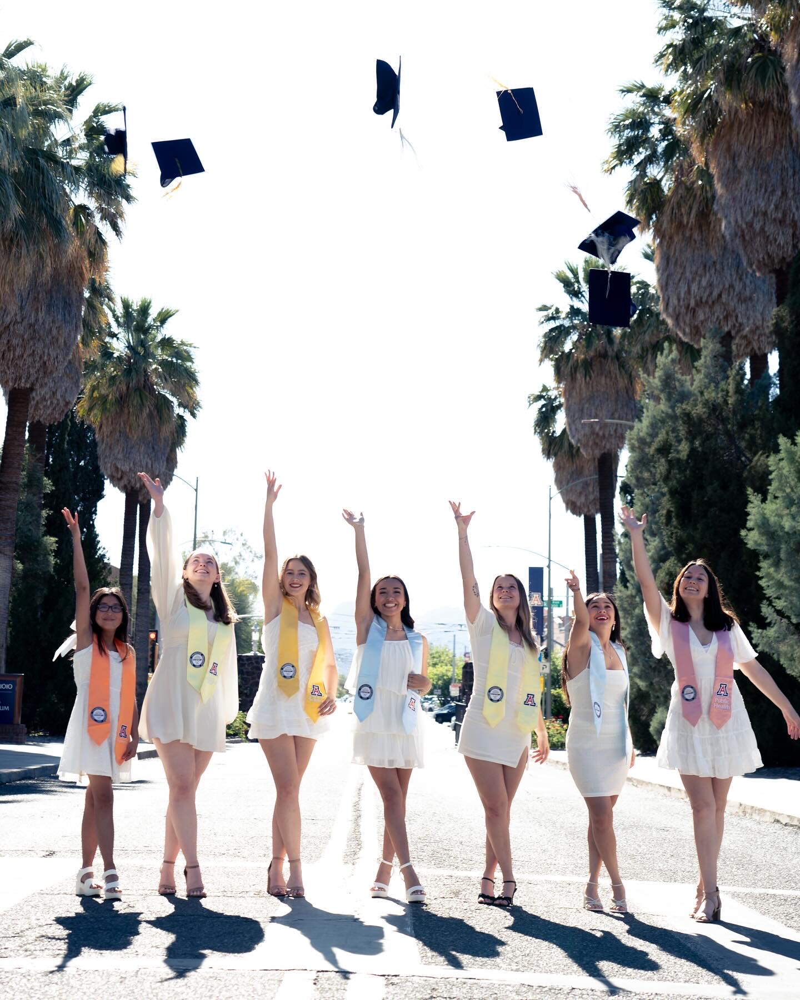
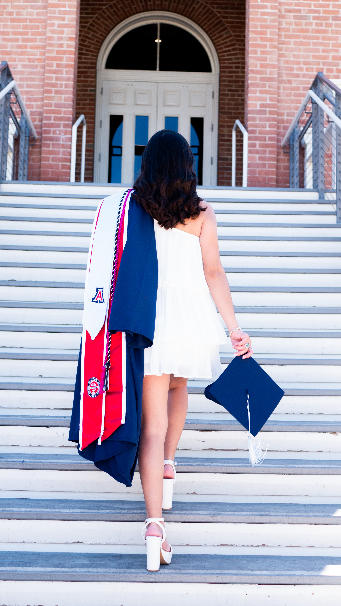
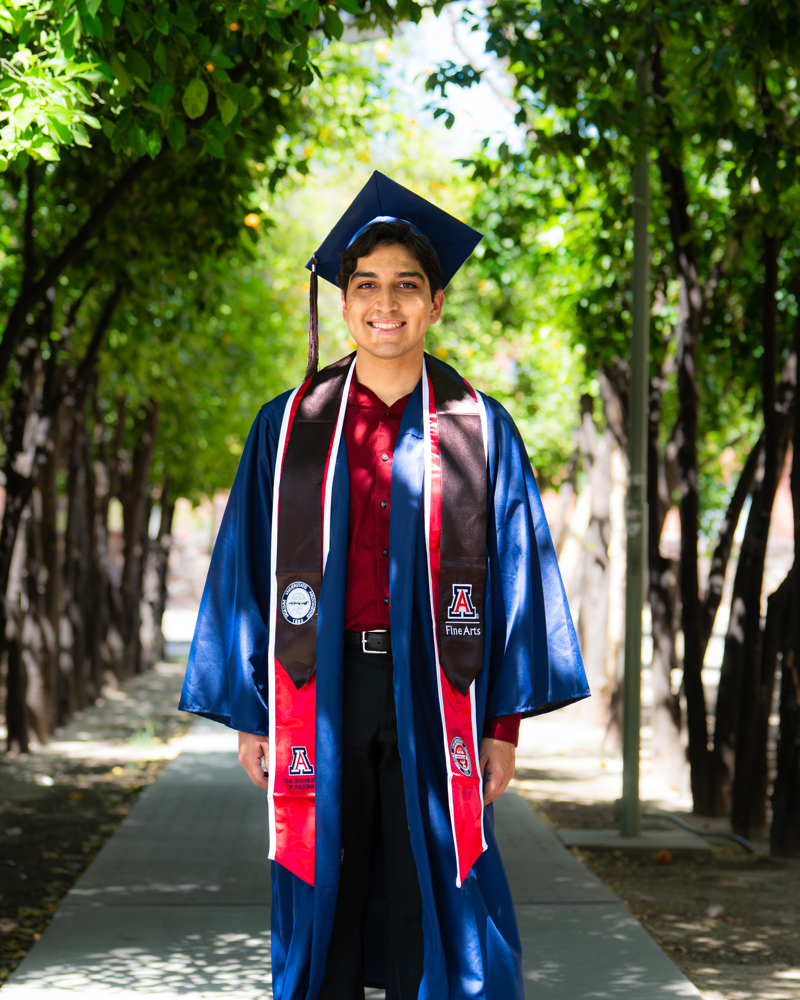
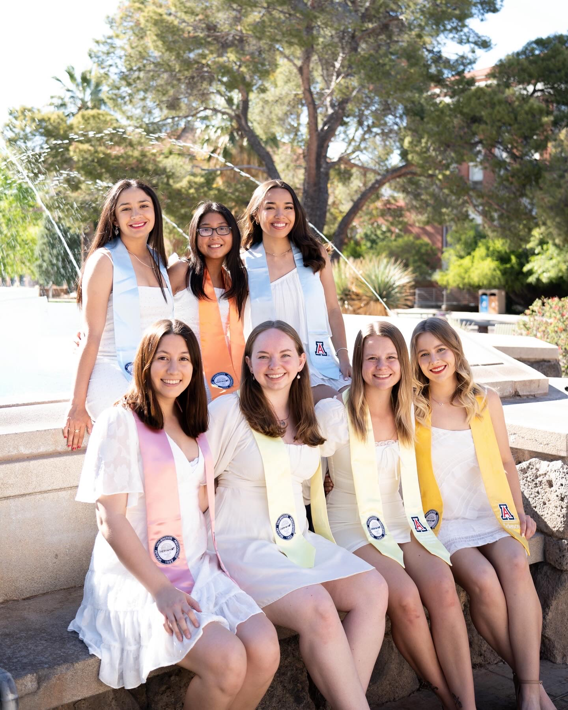
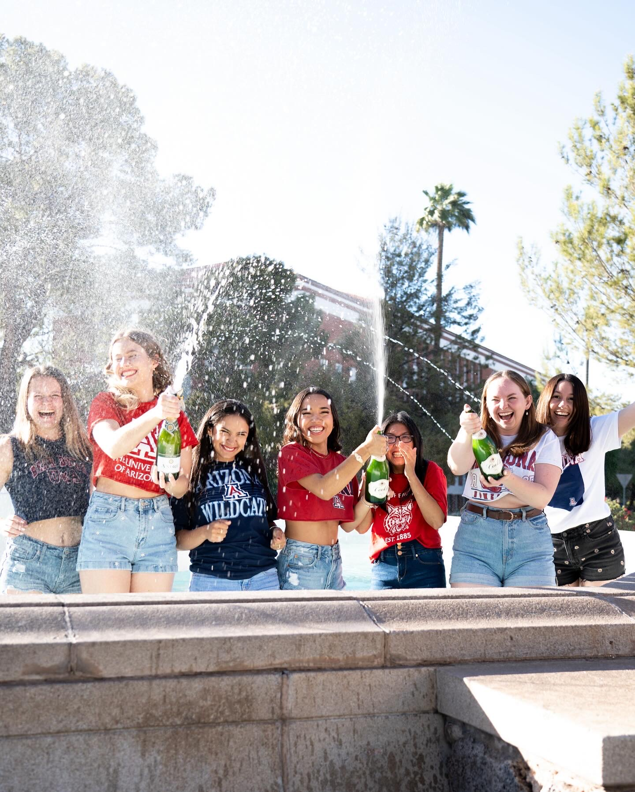
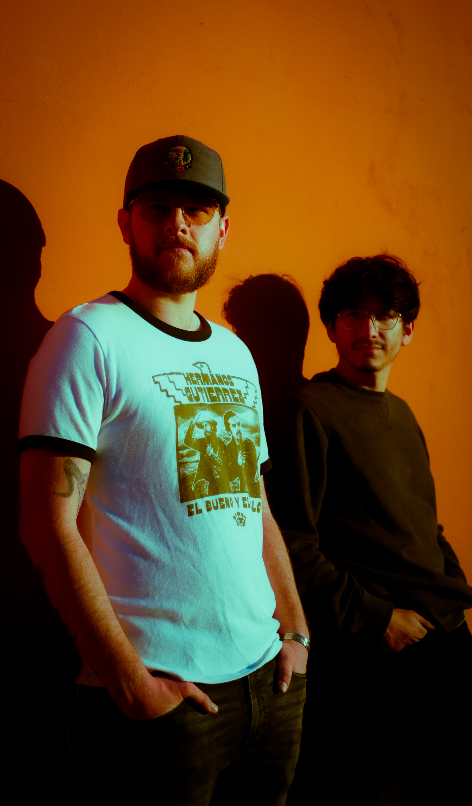
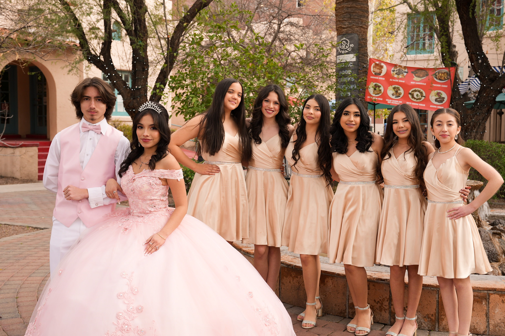
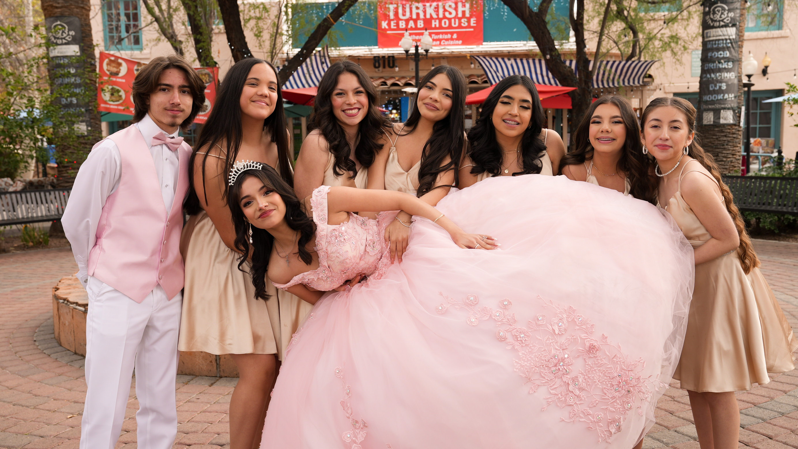

Photography
Selected photography work across graduation portraits, headshots, real estate, drone, events, concerts, and food photography.
Photo Work
Clean, polished photography for portraits, properties, events, restaurants, drone work, and local creative projects.
Grad Photos
Graduation portraits focused on clean composition, natural posing, and polished edits.






Portraits & Headshots
Clean portrait work for professional headshots, personal branding, and creative profiles.




Real Estate Photography
Interior, exterior, and listing-focused photography designed to showcase spaces clearly and professionally.


Drone Photography
Aerial photography for properties, landscapes, locations, events, and visual storytelling.


Concert & Event Photography
Photo coverage for live music, events, performances, community gatherings, and promotional use.






Food / Menu Photography
Food and menu photography for restaurants, social media, websites, and promotional materials.


Photography Services
Photo coverage for individuals, businesses, artists, events, restaurants, and property-focused projects.
Graduation
Grad Photos
Graduation portraits focused on clean composition, natural posing, and polished edits for announcements and social media.
Role: Photographer & Editor
Portraits
Portraits & Headshots
Portrait photography for headshots, personal branding, creative profiles, and professional use.
Role: Photographer & Editor
Real Estate
Real Estate Photography
Interior, exterior, and listing-focused photography designed to highlight spaces clearly and professionally.
Role: Photographer & Editor
Drone
Drone Photography
Aerial photo coverage for real estate, locations, landscapes, events, and promotional content.
Role: FAA-Certified Drone Operator, Photographer & Editor
Events
Concert & Event Photography
Event photo coverage focused on atmosphere, key moments, people, performances, and promotional storytelling.
Role: Photographer & Editor
Food
Food / Menu Photography
Menu and promotional food photography for restaurants, cafes, bars, websites, and social media.
Role: Photographer & Editor